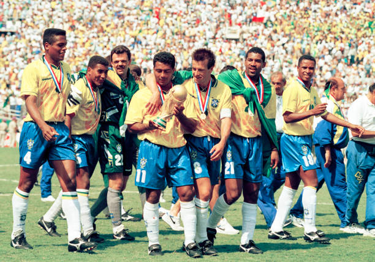
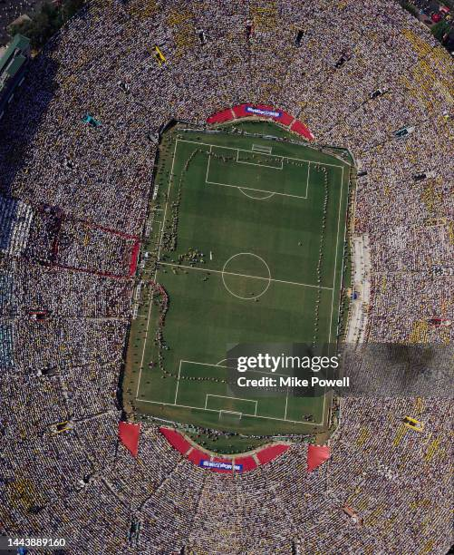

🏟️ Introdução
A Copa do Mundo de 1994 foi realizada nos Estados Unidos e marcou a primeira vez que o país sediou o maior torneio de futebol do planeta. Com estádios lotados e grande audiência, a competição ficou marcada pela paixão inesperada dos americanos pelo futebol.
🇧🇷 Brasil Campeão!
Após 24 anos, o Brasil conquistou seu quarto título mundial, tornando-se tetracampeão ao vencer a Itália nos pênaltis por 3 a 2 após empate em 0 a 0. Foi a primeira decisão por pênaltis em uma final de Copa do Mundo.
✨ Momentos Marcantes
- 🎯 Roberto Baggio isolando o pênalti decisivo para a Itália
- 👶 Comemoração do Bebeto embalando o bebê
- 📛 Primeira Copa com nomes dos jogadores nas camisas
🔍 Curiosidades
✔️ A maior média de público da história das Copas até hoje
✔️ A estreia dos Estados Unidos como anfitriões do torneio
✔️ Estádios adaptados para o "soccer", com gramado sintético substituído por natural
🖼️ Galeria

📨 Créditos
Conteúdo baseado em registros históricos da FIFA e imagens da Wikipedia Commons.